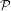
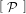

,P) que definem um espaço de
probabilidade discreto, ou seja,
,P) que definem um espaço de
probabilidade discreto, ou seja,
“Numbers that fool the Fermat test are called Carmichael numbers, and little is known about them other than that they are extremely rare. There are 255 Carmichael numbers below 100,000,000. The smallest few are 561, 1105, 1729, 2465, 2821, and 6601. In testing primality of very large numbers chosen at random, the chance of stumbling upon a value that fools the Fermat test is less than the chance that cosmic radiation will cause the computer to make an error in carrying out a ”correct”algorithm. Considering an algorithm to be inadequate for the first reason but not for the second illustrates the difference between mathematics and engineering.” Abelson & Sussman
Neste texto consideraremos triplas (Ω,,P) que definem um espaço de
probabilidade discreto, ou seja,
= 2Ω é a σ-álgebra de eventos,
→ ℝ é tal que
O lado esquerdo da equação (1) não depende de uma enumeração particular dos
conjuntos e um teorema do cálculo garante o mesmo para o lado direito: se uma série
de termos não-negativos converge então qualquer rearranjo dos termos resulta
numa série que converge para o mesmo valor (veja Bartle, 1976). Como
= 2Ω = {E: E ⊆ Ω} está fixo escrevemos somente (Ω,P). No caso de espaços
discretos a função de probabilidade P fica definida pelos valores de P({ω}) para todo
ω ∈ Ω pois decorre de (1) que
 |
para todo evento E ⊆ Ω. Com isso, podemos tomar P: Ω → [0,1] e como
consequência escrevemos P(ω) ao inves de P omitindo as chaves nos eventos
unitários.
omitindo as chaves nos eventos
unitários.
Exemplo 1. Quando nos referimos ao lançamento de uma moeda equilibrada, estamos considerando o espaço amostral {cara,coroa} com a função de probabilidade P({cara}) = P({coroa}) = 1∕2, portanto, P(∅) = 0 e P({cara,coroa}) = 1. Agora, suponha que uma moeda equilibrada é lançada até sair cara. Então, o espaço amostral que modela esse experimento é o conjunto das seqüencias ωn = (c1,c2,…,cn) tal que para cada n ≥ 1 temos cn = cara e para 1 ≤ i < n temos ci = coroa, logo Ω = {ωn: n ≥ 1}. Esse conjunto é claramente enumerável. Ainda, se definimos
 | (2) |
Seja  a descrição de um evento P ⊆ Ω. Denotamos por
![P [ P ]](algale7x.png) |
a propbabilidade do evento P, isto é, P = P(P) e para evidenciar o espaço amostral escrevemos
|
|
Por exemplo, quando consideramos a probabilidade de um algoritmo aleatorizado A com entrada x responder errado, escrevemos
![P m [ A (x, ω) est´a errado ]
ω∈R{0,1}](algale10x.png)
Nos algoritmos, nós vamos assumir a possibilidade de se fazer escolhas aleatórias, ou seja, assumir que os algoritmos dispõem de uma fonte de bits aleatórios e escrevemos a instrução
 |
para denotar o fato de que a é uma variável do algoritmo e que após a execução da atribuição ← R o valor da variável a é um elemento qualquer de {0,1} com 1∕2. De um modo geral, se (Ω,P) é um espaço de probabilidade finito, então escrevemos a instrução

Observação 2. Para a análise de complexidade dos algoritmos, assumimos que a instrução a ← R{0,1} tem custo constante. No caso geral, a ← RΩ, é feito em tempo O(log |Ω|).
Exercício 3. Prove que P(E1 ∪ E2) = P(E1) + P(E2) - P(E1 ∩ E2), para quaisquer eventos E1 e E2 num espaço de probabilidade discreto.
Exercício 4. Prove que para qualquer seqüência enumerável (Ei)i≥1 de eventos num espaço discreto vale

Consideremos o problema de decidir se f = 0, onde f ∈ ℝ[x] é um polinômio não-nulo de grau no máximo d > 0. Esse problema e sua variante multivariáveis tem importância central em complexidade computacional e voltaremos a estudá-lo na seção 2.2 e veremos sua importância na seção 12. Por ora, limitamo-nos a descrição do caso mais simples para ilustrar as definições apresentadas até agora.
Dado f ∈ ℝ[x] de grau no máximo d, escolhemos aleatoriamente e uniformemente a ∈{1,2,…,3d}. Se f(a) = 0, então respondemos sim, f = 0, senão respondemos não, f≠0. Notemos que se f = 0 então a resposta sim está correta entretanto se f≠0, então pode ocorrer f(a) = 0 caso a escolha aleatória a seja uma raiz de f; nesse caso a resposta sim está errada. Uma resposta não está sempre correta, ou seja, de fato f≠0.